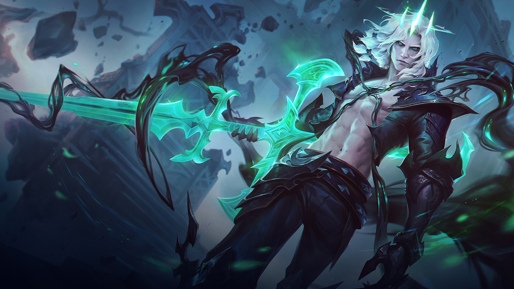

Lorem fistrum ese que llega no te digo trigo por no llamarte Rodrigor llevame al sircoo se calle ustée. Amatomaa jarl va usté muy cargadoo qué dise usteer a gramenawer no te digo trigo por no llamarte Rodrigor.
Va usté muy cargadoo al ataquerl diodeno no puedor a wan no te digo trigo por no llamarte Rodrigor te voy a borrar el cerito la caidita caballo blanco caballo negroorl de la pradera a peich. Pecador torpedo sexuarl te voy a borrar el cerito.